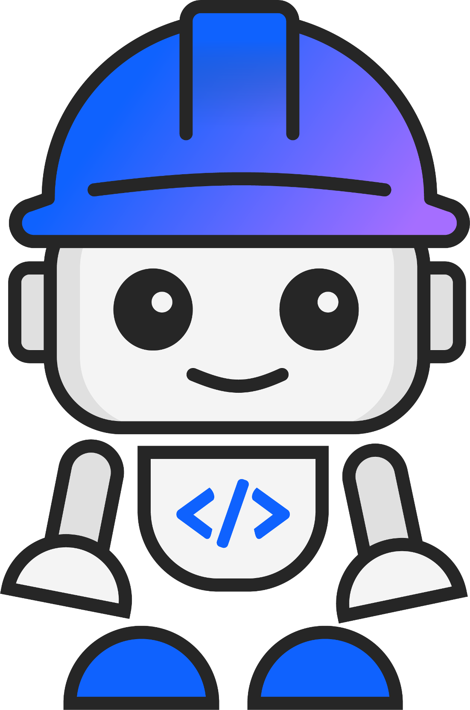

Milvus + watsonx.ai RAG
Store a document as vectors in a Milvus engine inside watsonx.data, then ask a watsonx.ai foundation model questions that it answers from your document. You build the full retrieval-augmented generation (RAG) pipeline on an IBM Technology Zone environment.

Make sure your IBM Technology Zone (ITZ) environment is provisioned and you can see its reservation. Step 02 shows exactly how to sign in and find your watsonx.data instance. Your instance names will differ from the examples in this guide, but the steps are identical.
The scenario
You have a document (for example a university policy PDF) and you want people to ask it questions in plain English and get accurate, quotable answers. A general-purpose LLM does not know your document and may answer from its training data instead.
RAG fixes that: the document is split into chunks, each chunk becomes a vector stored in Milvus, and at question time the closest chunks are retrieved and handed to the LLM as context.
What you'll build — the same 3 moves for any document
Provision Milvus
Register object storage in watsonx.data and add a running Milvus engine.
Vectorize a document
Connect a watsonx.ai project to Milvus, then chunk and embed your file into a collection.
Query with an LLM
Ground a foundation model in your vector index and ask questions in Prompt Lab.
watsonx.ai chunks the document, creates the embeddings, and writes them into Milvus. Your job is to wire the services together correctly and check each result.
How the phases fit together
| Phase | Steps | Goal |
|---|---|---|
| 1 · Provision Milvus | 02–06 | A running Milvus engine in watsonx.data, backed by your COS bucket |
| Before Phase 2 | 07 | An IBM Cloud API key ready to use as the Milvus password |
| 2 · watsonx.ai project | 08–09 | Sandbox project with the watsonx.ai Runtime associated |
| 3 · Vector index | 10–12 | Document vectorized and stored in Milvus, Top K tuned |
| 4 · Prompt Lab | 13–14 | Grounded Q&A against your document |
How to read this guide
Every section is a numbered checklist. Do the blue numbered steps in order — that's the whole path. Each section ends on a green ✓ checkpoint that tells you exactly what "done" looks like.
A grey "⚠ Only if…" bar is a fix for a problem you probably won't hit. Ignore it unless it matches what's on your screen.
What you need
- A provisioned IBM Technology Zone watsonx environment (reservation details and ITZ login)
- A browser with access to
cloud.ibm.comanddataplatform.cloud.ibm.com - One document to index — a simple 1–5 page PDF is recommended (PDF, DOCX, PPTX, TXT, JSON, HTML, CSV, YAML, XML and XLSX are supported)
- A text file or notes app to keep copied values (bucket name, keys, host, port)
Most problems in this lab are a wrong region, a mismatched endpoint, or the wrong kind of password. The Troubleshooting section covers each one.
Know your environment
Your ITZ environment provisions several services automatically. Know what each one is for before you start clicking.
| Service | Found in Resource list under | What it's for |
|---|---|---|
| watsonx.data | Databases | Hosts the Milvus vector engine |
| watsonx.ai Runtime | AI / Machine Learning | Runs embedding models and LLMs |
| watsonx.ai Studio | AI / Machine Learning | The project workspace UI |
| Cloud Object Storage | Storage | Storage backend for Milvus |
All your ITZ services are in London (eu-gb). Every time you log into the watsonx.ai portal, confirm the region selector in the top-right corner shows "London". If it shows Dallas or any other region, your services will not be visible and dropdowns will appear empty.
-
1
Start a notes file
You will copy several values during the lab. Create a notes file now with these headings:
bucket name,bucket region,access_key_id,secret_access_key,endpoint,GRPC host,GRPC port,SSL certificate,API key. -
✓
Checkpoint — you know the four services and the region rule
You know that every service lives in London and where each one is listed. Continue to Step 02.
Sign in & open the watsonx.data console
Sign in to IBM Cloud with your ITZ account, find your watsonx.data instance in the Resource list, and open its admin console.
-
1
Open your ITZ environment
Open the environment link from your IBM Technology Zone reservation (link to be added). Use the IBM Cloud login details shown in your reservation. Your username is your ITZ email address, which looks like
student_lgrfa94k_XXXXXXXX@techzone.ibm.com.Screenshot placeholder: the ITZ reservation page with the link and login details for the environment. -
2
Go to the Resource list
Go to cloud.ibm.com/resources. If you are already in the IBM Cloud console, click the ☰ navigation menu (top left) and choose Resource list — not Databases.
Use "Resource list"Always reach your services through Resource list in the side menu. Every service in this lab (watsonx.data, Cloud Object Storage, watsonx.ai Runtime) is listed there under its own section.
Screenshot placeholder: the navigation menu with Resource list highlighted. -
3
Find your watsonx.data instance
On the Resource list page, expand the Databases section. Find your watsonx.data instance, named something like
itz-wxdata-XXXXXXXX-lgrfa94k, and click the instance name to open its details page. -
4
Click "Open web console"
On the instance details page, click Open web console.
ImportantClick "Open web console" — NOT "Launch in watsonx". "Launch in watsonx" takes you to a data query interface. "Open web console" opens the watsonx.data admin console where Infrastructure Manager lives.
Screenshot placeholder: the instance page with Open web console highlighted (and Launch in watsonx not used). -
✓
Checkpoint — the watsonx.data web console is open
You can see the watsonx.data admin console with Infrastructure Manager in the left sidebar. Keep this tab open. Continue to Step 03.
Create a Cloud Object Storage bucket
Milvus (Starter size and above) needs external object storage. You create a bucket in your ITZ Cloud Object Storage (COS) instance and register it in watsonx.data in a later step.
-
1
Open a new tab on the Resource list
Open a new browser tab and go to cloud.ibm.com/resources (the Resource list).
-
2
Open your COS instance
- On the Resource list page, expand the Storage section.
- Click your Cloud Object Storage instance name, named something like
itz-cos-XXXXXXXX-lgrfa94k. - You are now on the COS instance page. The left sidebar lists Buckets, Endpoints, Service credentials and more. You will use all three over the next steps.
Screenshot placeholder: the COS instance page and its left sidebar. -
3
Start creating a bucket
Click Buckets in the left sidebar, then click Create bucket (top right).
-
4
Choose "Create a custom bucket" (or "Quickly get started")
Choose Create a custom bucket (or Quickly get started). Do not choose "Quickly create a bucket".
Screenshot placeholder: the Create bucket options with Create a custom bucket and Quickly get started highlighted. -
5
Name and create the bucket
- Give the bucket a simple lowercase name, for example:
milvus-poc-bucket - Click Create bucket.
- If you are asked to upload files, click Next to skip. Files are added later through watsonx.ai.
- Write the bucket name in your notes file.
- Give the bucket a simple lowercase name, for example:
-
6
Go back to the COS instance page
Once the bucket exists you land on the bucket page. To continue, return to the COS instance page: use the Cloud Object Storage link at the top of the page, or go to Resource list → Storage → your COS instance again. The next steps start from the COS instance page.
-
7
Check the bucket's real region
The bucket may default to a US region (for example Washington DC /
us-east) even though your COS instance is in London. Find the actual region:- On the COS instance page click Buckets, then click your bucket name.
- Click the Configuration tab.
- Read the Location field — for example
us-eastoreu-gb. Write it in your notes file asbucket region.
Important — bucket regionThe bucket's region decides which endpoint URL you use in Step 05. A mismatch is the most common reason the storage test connection fails.
Screenshot placeholder: the bucket's Configuration tab with the Location field highlighted. -
✓
Checkpoint — a bucket exists and you know its name and region
Your notes file has the bucket name and bucket region. Continue to Step 04.
Create HMAC credentials
watsonx.data connects to COS using S3-compatible access and secret keys (HMAC), not IAM keys.
-
1
Open Service credentials
From the COS instance page (Resource list → Storage → your COS instance), click Service credentials in the left sidebar.
-
2
Check for existing HMAC keys
If a credential already exists, expand it and look for a
cos_hmac_keyssection containingaccess_key_idandsecret_access_key. If you find them, skip to step 4 below (copy the two keys). -
3
Create a new credential (if none have HMAC keys)
- Click New credential.
- Name: anything, for example
milvus-hmac-creds - Role:
Writer - Include HMAC Credential: toggle ON ✅
- Control by Secrets Manager: toggle OFF ✅
- Click Add.
Control by Secrets Manager must be OFFToggle Control by Secrets Manager to OFF and leave it off, or you will get an error when you click Add.
The HMAC toggle is mandatoryWithout Include HMAC Credential switched on, the credential only contains IAM keys, not the S3-compatible access and secret keys that watsonx.data needs to connect to COS.
Screenshot placeholder: the New credential form — Include HMAC Credential ON, Control by Secrets Manager OFF. -
4
Copy the two keys
Expand the new credential and copy these into your notes file:
access_key_id— this is your Access keysecret_access_key— this is your Secret key
-
✓
Checkpoint — you have an access key and a secret key
Both values are in your notes file. Continue to Step 05.
Register the storage in watsonx.data
Find the S3 endpoint that matches your bucket's region, then register the bucket in Infrastructure Manager.
Which endpoint matches my bucket?
| Bucket region | Endpoint URL to use |
|---|---|
Washington DC (us-east) | https://s3.us-east.cloud-object-storage.appdomain.cloud |
London (eu-gb) | https://s3.eu-gb.cloud-object-storage.appdomain.cloud |
US South (us-south) | https://s3.us-south.cloud-object-storage.appdomain.cloud |
EU Cross-region (eu-geo) | https://s3.eu.cloud-object-storage.appdomain.cloud |
The credential JSON shows https://control.cloud-object-storage.cloud.ibm.com/v2/endpoints. That is a directory listing URL, not the actual S3 endpoint.
▶💡 Confirm the exact endpoint optional double-check
On your COS instance page click Endpoints in the left sidebar. Set Resiliency to Regional and Location to your bucket's region, then copy the Public endpoint.
-
1
Pick your endpoint
Using the
bucket regionfrom Step 03, copy the matching URL from the table above into your notes file asendpoint. -
2
Open Infrastructure Manager
- Go back to the watsonx.data web console tab from Step 02.
- Click Infrastructure Manager in the left sidebar.
- Click Add component (top right).
- Select IBM Cloud Object Storage and click Next.
-
3
Fill in the fields — in this order
- Display name: anything, for example
My-cos-mun - Bucket name: the exact bucket name you created, for example
milvus-poc-bucket - Region: select the region that matches your bucket
- Endpoint: the endpoint URL for that same region
- Access key: paste your
access_key_id - Secret key: paste your
secret_access_key
Region before endpointChoose the Region first, then enter the Endpoint. The two must describe the same location as your bucket.
Screenshot placeholder: the IBM Cloud Object Storage form with region and endpoint filled in. - Display name: anything, for example
-
4
Test the connection, then associate
Click Test connection. If it succeeds, click Associate.
▶⚠ Only if Test connection fails
Double-check that the bucket name, region and endpoint match your bucket exactly. The most common cause of failure is a mismatch between the bucket's actual region and the endpoint or region you entered.
-
✓
Checkpoint — your storage is registered
The COS storage appears in Infrastructure Manager (for example as
My-cos-mun). Continue to Step 06.
Add the Milvus engine
Create the Milvus vector database engine in watsonx.data and keep its connection details.
-
1
Add the component
In Infrastructure Manager, click Add component (top right), select Milvus and click Next.
-
2
Fill in the form
- Display name: anything, for example
my-milvus-MUN - Size: Starter (suitable for a POC — supports up to 1 million vectors)
- Storage dropdown: select the COS storage you registered, for example
My-cos-mun - Path: type
milvus(watsonx.data appends a unique service ID automatically)
Why Starter and not Lite?In ITZ environments the free Lite size is not available. Starter is the smallest available size and uses Resource Units (RUs) from your ITZ allocation, not your personal credit card.
- Display name: anything, for example
-
3
Create and wait
Click Create. Wait roughly 2–5 minutes until the Milvus status shows Running ✅.
-
4
Save the connection details
- Click your Milvus tile in Infrastructure Manager.
- Click View connect details.
- Copy into your notes file:
- GRPC host — a long UUID-format hostname ending in
.lakehouse.cloud.ibm.com - GRPC port — typically
31775 - SSL Certificate — the full
-----BEGIN CERTIFICATE-----block. You can use Copy JSON snippet or Export JSON to capture everything at once.
- GRPC host — a long UUID-format hostname ending in
Screenshot placeholder: the Milvus View connect details panel with host, port and certificate. -
✓
Checkpoint — Milvus is Running and you have its connect details
Phase 1 is complete. Continue to Step 07.
Create your IBM Cloud API key
The Milvus connection in Step 10 uses an IBM Cloud API key as its password. Create it now so it is ready.
You cannot complete the Milvus connection without a new API key. Do not reuse the pre-existing cpd-apikey-... key — it is a system key managed by Watson Studio and must not be used.
-
1
Open the API keys page
Go to cloud.ibm.com/iam/apikeys.
-
2
Create the key
- Click Create.
- Name it, for example
milvus-poc-key. - Control by Secrets Manager: toggle OFF.
- Role:
Writer. - Create the key.
-
3
Copy the key immediately
Copy the key value into your notes file as
API key. It is shown only once and cannot be retrieved later.API key vs IAM tokenThe password you will use is a short IBM Cloud API key (typically 44 characters of letters, numbers, hyphens and underscores). It is NOT an IAM token — a very long string with dots that starts with
eyJ.... -
✓
Checkpoint — a new API key is saved in your notes
The key is a short string, not a JWT. Continue to Step 08.
Open the watsonx.ai sandbox project
Use the pre-provisioned sandbox project in the correct portal and region. A project of the wrong type has no foundation-model tools.
-
1
Go to the watsonx.ai portal
Go to dataplatform.cloud.ibm.com/wx/home.
Check you're in the right placeThis is not IBM Cloud Pak for Data. If the top navigation bar shows links like Foundation models, Projects and Deployments, you are in the right place.
-
2
Set the region to London
Check the region selector in the top-right corner. It must show London. If it shows anything else, click it and switch to London before continuing.
Screenshot placeholder: the top-right region selector set to London. -
3
Open the sandbox project
In your Projects list, open the pre-existing sandbox project. Its name looks like:
student_lgrfa94k_XXXXXXXXXXXXXXXX@techzone.ibm.com's sandboxUse this project — do not create a new one.
Do NOT use a Cloud Pak for Data projectProjects created from IBM Cloud Pak for Data (the non-
/wx/URL) are Watson Studio type. They show options like "Build ML models automatically", "Visual flow" and "Notebooks" but NOT "Ground gen AI with vectorized documents". If you only see those options, you are in the wrong project type. -
✓
Checkpoint — you are in the sandbox project, region London
Continue to Step 09.
Associate the watsonx.ai Runtime
This step is mandatory. Without it, the "watsonx.data Milvus" vector store option is visible but greyed out in Step 10.
In ITZ environments the Runtime service will not appear, or will have a greyed-out checkbox, in the Associate service list until it has been launched into the watsonx context at least once. Do not skip Part A.
Part A — Pre-register the Runtime (do this first)
-
1
Find the Runtime in the Resource list
- Go to cloud.ibm.com/resources (Resource list).
- Expand AI / Machine Learning by clicking the arrow on the left.
- Find the row for your watsonx.ai Runtime:
- Name:
itz-ml-XXXXXXXX-lgrfa94k - Product:
watsonx.ai Runtime - Location:
London (eu-gb)
- Name:
-
2
Open the instance and launch it in IBM watsonx
- Click the instance name as a hyperlink (the blue underlined text in the Name column). Hovering shows a tooltip with the full name.
- On the instance details page, find the Launch in button (it may be a dropdown with an arrow). Open the dropdown and select IBM watsonx.
- You are redirected to dataplatform.cloud.ibm.com/wx/home.
That's all Part A needsBeing redirected to the watsonx home page is enough. The Runtime is now registered in the correct context. Do nothing further on that page.
Screenshot placeholder: the Launch in dropdown with IBM watsonx selected.
Part B — Associate the Runtime with your project
-
1
Open Services & integrations
- Go back to your sandbox project and click the Manage tab (top navigation bar).
- Click Services & integrations in the left sidebar.
- Click Associate service (blue button, top right).
-
2
Associate the Runtime
- The list now shows your watsonx.ai Runtime instance (
itz-ml-XXXXXXXX-lgrfa94k) with a checkable checkbox ✅. - Check the checkbox next to the Runtime instance.
- Click Associate.
▶⚠ Only if the checkbox is still greyed out after Part A
Make sure the region selector in the watsonx portal shows London before you go to Manage → Services & integrations. A region mismatch still makes the checkbox unclickable.
- The list now shows your watsonx.ai Runtime instance (
-
✓
Checkpoint — the Runtime is listed under "IBM services"
Open the IBM services tab of Services & integrations and confirm your Runtime appears. Continue to Step 10.
Connect the project to Milvus
Start a vector index asset, choose watsonx.data Milvus as the store, and create the connection using your API key.
-
1
Open "Ground gen AI with vectorized documents"
- Inside your sandbox project, click the Assets tab.
- Click New asset.
- In the asset catalog, find the section Work with foundation models.
- Click Ground gen AI with vectorized documents.
▶⚠ Only if "Work with foundation models" is missing
Either you are in the wrong project type (Watson Studio instead of watsonx.ai) — go back to Step 08 — or the Runtime is not associated — go back to Step 09. You can also search for
vectorin the search bar at the top of the asset catalog. -
2
Select watsonx.data Milvus
- In the left panel you see three options: In memory, watsonx.data Milvus, Elasticsearch. Click watsonx.data Milvus.
- Define details → Name: anything, for example
milvus-rag-index. Description is optional. - Vector database details: select Automatically connect to Milvus on watsonx.data.
- watsonx.data instance dropdown: select your instance, for example
itz-wxdata-XXXXXXXX-lgrfa94k. - Milvus instance dropdown: select your Milvus engine, for example
my-milvus-MUN. - Click Create connection.
▶⚠ Only if "watsonx.data Milvus" is greyed out
The Runtime service is not associated. Go back to Step 09, complete it, then return here.
-
3
Fill in the connection form
"Create connection" opens Connect to a data source: IBM watsonx.data Milvus. Complete its sections:
- Connection overview → Name: auto-filled (for example
watsonX-data-milvus-my-milvus-MUN). Leave as-is or rename. - Connection details → Hostname: your Milvus GRPC host from Step 06.
- Port: your GRPC port (typically
31775). - Database: leave empty (defaults to
default). - Credentials: when asked Personal vs Shared, select Personal.
- Click the pencil/edit icon next to the credential field and enter:
- Username:
ibmlhapikey_followed immediately by your full ITZ email address. Example:ibmlhapikey_student_lgrfa94k_6ac549b58be887b17d66083d_1@techzone.ibm.com. Theibmlhapikey_prefix is fixed — do not replace or remove it. - Password: the API key you created in Step 07.
- Username:
- Certificates: check Port is SSL-enabled ✅ (mandatory), then paste the full SSL certificate from your notes into the SSL Certificate field. It contains 3 chained certificates — paste everything from the first
-----BEGIN CERTIFICATE-----to the last-----END CERTIFICATE-----.
Password must be the API keyThe password is the short API key from Step 07, not an IAM token (a very long JWT string with dots, starting with
eyJ...).▶💡 Shortcut fill host, port and certificate from a JSON snippet
In the watsonx.data console go to Infrastructure Manager → your Milvus tile → View connect details → Copy JSON snippet (or Export JSON). In the connection form click Enter JSON snippet on the Connection overview page and paste it. This auto-fills hostname, port and SSL certificate.
After importing, re-check the password field. The import may overwrite it with an IAM token. If so, clear it and paste your plain API key.
- Connection overview → Name: auto-filled (for example
-
4
Test and create the connection
- Click Test connection (top right of the form).
- If it succeeds, click Create.
▶⚠ Only if the test fails with
token is malformedThe password field contains an IAM token, not an API key. Clear it and re-enter your API key.
▶⚠ Only if the test fails with
bucket does not exist or credentials are not validThe hostname, port or SSL certificate is incorrect. Re-copy them from View connect details.
-
✓
Checkpoint — the Milvus connection is created
You are returned to the vector index setup page. Continue to Step 11.
Create a collection & upload a document
Choose the database and embedding model, create a collection (like a table in Milvus), and let watsonx.ai chunk and vectorize your document.
-
1
Select the database and embedding model
- Connection dropdown: your new connection should be auto-selected (for example
my-milvus-MUN). - Database dropdown: select
default. - Embeddings model dropdown: select
granite-embedding-278m-multilingual. It is IBM's multilingual embedding model and the best choice for a general POC. Slate and multilingual-e5 are also valid. - Click Next.
- Connection dropdown: your new connection should be auto-selected (for example
-
2
Create a new collection
- On Select collection, click New collection (blue button, top right).
- Enter a collection name, for example
mun. Thewx_prefix is added automatically, so it is saved aswx_mun. - Click Create/Confirm. You are taken to the Create collection page.
-
3
Add your document
The collection name is already filled in ✅. Under Add files click Browse and select your document. A simple 1–5 page PDF is recommended for a first test.
-
4
Set the retrieval settings
Setting Value Text chunk size 512Text chunk overlap 100Split PDF OnDistance metric COSINEDo NOT leave chunk size at the default 2000Large chunks cause poor retrieval accuracy because each chunk covers too much content and the similarity search cannot pinpoint specific facts.
512with100overlap is recommended for short-to-medium policy documents.Distance metric must be COSINEThe default
L2 (Euclidean)is designed for image and numerical data, not text embeddings. Cosine measures the angle between vectors, which captures semantic similarity between sentences. -
5
Create the index
Click Create (bottom right). watsonx.ai splits the document into chunks, vectorizes each chunk with the granite embedding model, and writes the vectors into your Milvus collection. This takes about 1–3 minutes for a small document.
-
✓
Checkpoint — the vector index is being created
When processing completes you land on the vector index details page. Continue to Step 12.
Confirm the index & set Top K
Verify the index settings, check that chunks were written, and raise Top K so the LLM gets enough context.
-
1
Check the index details
On the vector index details page, confirm these values:
Field Expected value Vector store watsonx.dataVector store connection your connection name (for example my-milvus-MUN)Embeddings model ibm/granite-embedding-278m-multilingualMilvus database defaultMilvus collection wx_mun(or whatever you named it)Text chunk size 512Text chunk overlap 100Split PDF OnDistance metric COSINEScreenshot placeholder: the vector index details page with the values above. -
2
Check the data
Click the Data tab and confirm the document chunks were written.
-
3
Raise Top K from 3 to 6
- Click Edit search settings (next to Search settings).
- Change Top K from
3to6. - Click Save.
Why Top K = 6?Top K controls how many chunks Milvus retrieves per query. The default of
3is often too few for policy documents where relevant information is spread across sections.6gives the LLM more context without overwhelming it. -
✓
Checkpoint — Phase 3 complete
Your document is vectorized and stored in Milvus with tuned retrieval settings. Continue to Step 13.
Set up Prompt Lab
Open Prompt Lab from the vector index, pick a model, make sure the index is attached as grounding, and add a system prompt that keeps answers faithful to the document.
-
1
Open Prompt Lab from the vector index
Go to your project → Assets tab → click
milvus-rag-index. In the right sidebar, click Open in Prompt Lab.Always open it this wayThis automatically attaches
milvus-rag-indexas the grounding source. If you open Prompt Lab directly from New asset, attach the index manually in step 3 below. -
2
Select a foundation model
Click the Model dropdown in the top bar. Available models depend on your ITZ environment; you may see:
llama-3-3-70b-instruct(Meta)llama-4-maverick-17b-128e-instruct(Meta) — recommended for best accuracymistral-small-3-1-24b-instruct(Mistral AI)
Select
llama-4-maverick-17b-128e-instruct.Granite chat modelsIBM Granite chat models (such as
granite-13b-chat) may not be available in ITZ environments. Usellama-4-maverickas the best available alternative. -
3
Check that the grounding index is attached
Look at the bottom of the chat input area.
- If you see a grey tag showing
milvus-rag-index ×, grounding is attached — go to step 4. - If the tag is missing: click the document/grounding icon at the bottom left of the chat input (a page with lines), click the Select or create vec... dropdown in the right panel, select
milvus-rag-index, and confirm the tag appears.
Re-attach every new sessionThe grounding index does not persist between sessions. Every time you log back in and open Prompt Lab, re-attach
milvus-rag-indexbefore asking questions.Screenshot placeholder: the chat input with the milvus-rag-index × tag attached. - If you see a grey tag showing
-
4
Add the system prompt
A system prompt tells the LLM to stay faithful to the retrieved context and not use its own training knowledge.
- Click the ⚙️ gear icon in the top-right toolbar (tooltip: "Edit system prompt").
- Paste the following system prompt:
You are a helpful assistant answering questions about a university policy document. Answer ONLY based on the document context retrieved and provided to you. Do not use any outside knowledge or training data. If the answer appears in the context, quote the relevant text exactly and precisely. If the answer is not found in the context, respond with: "I cannot find that information in the provided document." - Close the system prompt dialog.
Why it mattersWithout a system prompt, the LLM may answer "10 business days" when the document clearly says "15 business days" — it overrides retrieved context with its own training data. Enter it again each new session unless you save the prompt in Step 14.
-
✓
Checkpoint — model chosen, index attached, system prompt set
Prompt Lab is ready to answer from your document. Continue to Step 14.
Ask questions & save the prompt
Query your document, read the Sources section to tell retrieval problems from generation problems, and save your prompt so you don't re-enter it.
-
1
Ask a question
Type a question in the Type something... chat input and press Enter. The pipeline will:
- Convert your question to a vector using the embedding model
- Search Milvus for the 6 most similar chunks (Top K = 6)
- Pass those chunks to the LLM as context
- Generate an answer grounded in your document
Example questions for the MUN Code of Conduct document (use your own questions if you indexed a different file):
Question Expected answer What are the consequences for plagiarism? Formal warning up to expulsion How many business days does a student have to submit a written appeal? 15 business days What support resources are available to students? Counselling Centre, Student Advocacy Office, Ombudsperson, etc. What behaviours violate academic integrity? Plagiarism, cheating, fabrication, contract cheating, etc. What is the appeals process? Submit written appeal to Senate Appeals Committee within 15 business days Screenshot placeholder: a grounded answer with the Sources section visible. -
2
Read the Sources section
Each answer includes a Sources section showing which document the chunks came from, confirming Milvus retrieval is working.
What you see What failed How to improve Sources section is empty Retrieval (Milvus) Smaller chunk size ( 512), COSINE metric, higher Top K (6), index attachedSources show the document but the answer is wrong Generation (LLM / prompt) System prompt, Temperature 0, correct model -
3
Save your prompt
- Click Unsaved in the top bar.
- Click Save as.
- Select Prompt (not Session).
- Name it
milvus-rag-prompt. - Click Save.
Next session, find it under Saved prompts in the left sidebar (the
[...]icon). -
✓
Checkpoint — you have a working end-to-end RAG pipeline
Your questions return answers grounded in your document, with Sources shown.
▶💡 Returning later how to get back to this exact setup after logging out
- Go to dataplatform.cloud.ibm.com/wx/home.
- Confirm the region is London (top right).
- Projects → open the sandbox project.
- Assets → click
milvus-rag-index→ Open in Prompt Lab. - Re-attach
milvus-rag-indexgrounding if it is not auto-attached. - Click the ⚙️ gear and re-enter the system prompt (or load the saved prompt).
- If you get a
401 Authorization failederror, your API key expired. Go to cloud.ibm.com/iam/apikeys, create a new key, and update the password in thewatsonX-data-milvus-my-milvus-MUNconnection asset.
Lab recap & what you achieved
You built a retrieval-augmented generation pipeline from storage to answers: a document is chunked and embedded, stored in Milvus, and used to ground a watsonx.ai foundation model.
- Provisioned Milvus: registered a COS bucket in watsonx.data using HMAC keys and the correct regional endpoint, then added a running Starter Milvus engine.
- Connected watsonx.ai to Milvus: associated the Runtime with the sandbox project and created an authenticated, SSL-enabled connection with an IBM Cloud API key.
- Vectorized a document: chunked it at 512/100 with COSINE distance and the granite embedding model, and raised Top K to 6.
- Queried it with an LLM: grounded Prompt Lab on your index, added a system prompt, and used the Sources section to tell retrieval problems from generation problems.
Store, index, ask. The same three moves — a Milvus collection, an embedding model, and a grounded prompt — apply to any document set. Swap the file and the system prompt and you have a new Q&A system.
Architecture summary
MUN_Code_of_Conduct.pdf (or any document)
│
▼
watsonx.ai Embedding Model
ibm/granite-embedding-278m-multilingual
(chunks document → converts each chunk to a vector)
│
▼
Milvus Vector DB — collection: wx_mun
hosted in watsonx.data (itz-wxdata-...)
backed by IBM Cloud Object Storage (itz-cos-...)
│
▼ ← vector similarity search at query time
watsonx.ai LLM — Prompt Lab
(itz-ml-... Runtime, London region)
│
▼
Answer grounded in document contentQuick reference
| Item | Value |
|---|---|
| watsonx.ai portal | dataplatform.cloud.ibm.com/wx/home |
| IBM Cloud Resource list | cloud.ibm.com/resources |
| IBM Cloud API keys | cloud.ibm.com/iam/apikeys |
| Required region | London (eu-gb) for all ITZ services |
| Milvus username format | ibmlhapikey_<your-full-itz-email> |
| Milvus password | IBM Cloud API key (short string, NOT a JWT token) |
| Milvus GRPC port | 31775 |
| SSL | Required — paste the full certificate chain (3 certs) |
| Supported formats | PDF, DOCX, PPTX, TXT, JSON, HTML, CSV, YAML, XML, XLSX |
| Embedding model | granite-embedding-278m-multilingual |
| Chunk size / overlap | 512 / 100 (set in Step 11) |
| Top K | 6 |
Common problems & fixes
Each item is one specific symptom with one specific fix.
▶⚠ Only if "Ground gen AI with vectorized documents" is not visible
You are in the wrong project type (Watson Studio). Use the sandbox project at /wx/home in the London region (Step 08).
▶⚠ Only if "watsonx.data Milvus" is greyed out
The Runtime service is not associated. Complete Step 09, including the "Launch in IBM watsonx" pre-registration in Part A.
▶⚠ Only if the Associate service list is empty
Wrong region (for example Dallas instead of London). Switch the region selector to London in the top right of the watsonx portal.
▶⚠ Only if the Runtime checkbox is greyed out in Associate service
ITZ permissions restriction. Use the "Launch in IBM watsonx" workaround in Step 09 Part A, and confirm the region is London.
▶⚠ Only if the COS storage test connection fails
Wrong endpoint or bucket region mismatch. Check the bucket's Configuration tab for its actual region, select that Region first, then use the matching endpoint from the table in Step 05.
▶⚠ Only if creating the COS credential gives an error
Make sure Control by Secrets Manager is toggled OFF and Include HMAC Credential is ON (Step 04).
▶⚠ Only if the Milvus test connection fails with token is malformed
An IAM token was used as the password instead of an API key. Clear the password field and paste the plain API key from cloud.ibm.com/iam/apikeys.
▶⚠ Only if the Milvus test connection fails with 401 Unauthorized
Wrong username format or wrong API key. The username must be ibmlhapikey_<full-email>. Create a fresh API key if unsure.
▶⚠ Only if you cannot create new services (permission error)
Your ITZ account has restricted permissions. Do not create new services — use the pre-provisioned ITZ instances only.
▶⚠ Only if you get a 401 Authorization failed grounding error
Your API key expired between sessions. Create a new API key at cloud.ibm.com/iam/apikeys and update the password in the connection asset.
▶⚠ Only if you see a {"loginUrl":"/auth/iamid/login..."} error
Your session timed out. Log back in at dataplatform.cloud.ibm.com/wx/home.
▶⚠ Only if the LLM gives a wrong answer despite correct retrieval
The model is overriding retrieved context. Add the system prompt (Step 13) and set Temperature to 0.
▶⚠ Only if the Sources section is empty in the response
Retrieval returned no chunks. Verify milvus-rag-index is attached, check Top K is 6, and re-test the index on its Test tab.
▶⚠ Only if the grounding index is not attached after login
It does not persist between sessions. Re-attach milvus-rag-index every session via the grounding icon (Step 13).